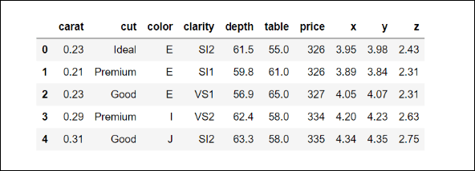
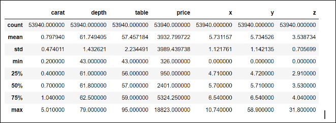
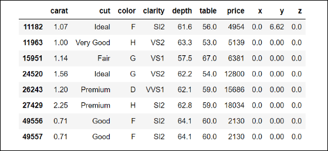
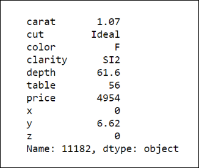
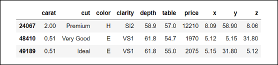

(Sponsors) Get started learning Python with DataCamp's free Intro to Python tutorial. Learn Data Science by completing interactive coding challenges and watching videos by expert instructors. Start Now!
Applying Predictive Analysis on Diamond Prices
Updated on Jan 07, 2020
This article will introduce you to a case study that applies predictive analytics on a dataset of diamond prices. We’ll begin with the Problem understanding and definition stage.
Diamond prices – problem understanding and definition #
A new company, Intelligent Diamond Reseller (IDR), wants to get into the business of reselling diamonds. They want to innovate in the business, so they will use predictive modeling to estimate how much the market will pay for diamonds. Of course, to sell diamonds in the market, first they have to buy them from the producers; this is where predictive modeling becomes useful.
Let's say people at IDR know ahead of time that they will be able to sell a specific diamond in the market for USD 5,000. With that information, they know how much to pay when buying this diamond. If someone tries to sell that diamond to them for USD 2,750, then that would be a very good deal; likewise, it would be a bad deal to pay USD 6,000 for such a diamond.
So, as you can see, for IDR, it would be very important to be able to predict the price the market will pay for diamonds accurately.
They have been able to get a dataset (this is actually real-world data) containing the prices and key characteristics of about 54,000 diamonds; here we have the metadata about the dataset:
- Number of attributes: 10
Feature information: A DataFrame with 53,940 rows and 10 variables:
- price: Price in US dollars
- carat: Weight of the diamond
- cut: Quality of the cut (fair, good, very good, premium, ideal)
- color: Diamond color, from J (worst) to D (best)
- clarity: A measurement of how clear the diamond is (I1 (worst), SI2, SI1, VS2, VS1, VVS2, VVS1, IF (best))
- x: Length in mm
- y: Width in mm
- z: Depth in mm
- depth: Total depth percentage =
z / mean(x, y) = 2 * z / (x + y) - table: Width of the top of the diamond relative to the widest point
This is how this dataset looks:

Getting more context #
According to the website https://www.diamonds.pro, the most important factor in the price of the diamond is the carat or weight of the diamond. Along with the carat, other very important characteristics that play an important role in the price of diamonds are color, clarity, and cut. This is good news, since it seems that we have all these features contained in our dataset.
Another key characteristic about diamonds is the certification process, and there is no information about certification in the dataset, which is potentially problematic since our research shows that people will be willing to pay much less for a diamond that is not certified. This is one of the key questions that you will have to ask the IDR people. After talking with them, they inform you that they will only deal with certified diamonds and that the dataset you will work with is about certified diamonds.
This is an example of the limitations that must be considered in any predictive model. In this case, since only certified diamonds will be used for model building and training, it would be incorrect to use this model to predict the price of diamonds that are not certified. We will discuss model limitations much more in the modeling chapters.
Diamond prices – proposing a solution at a high level #
Now, we have a general understanding of the problem, what IDR would like to accomplish, and we know something about the dataset and the context of the problem. Let's formalize the problem: our unit of observation is the diamond, the dataset we have consists of 10 attributes, and each diamond is a data point. Let's make explicit the goal we would like to accomplish and the deliverables.
Goal #
After discussions with the top management from IDR, you state the general goals of the project. They are listed as follows:
- To use the features contained in the dataset (all columns except for the price)
- To build a predictive model that predicts the price of diamonds, as accurately as possible, based on those features
- To predict the prices of diamonds offered to IDR by the producers, so IDR can decide how much to pay for those diamonds
These goals will guide all of our actions and the development of the project.
Methodology #
For the problem we have defined, the target is the price of the diamond, and our features will be the nine remaining columns in our dataset: carat, cut, color, clarity, x, y, z, depth, and table.
Since we are talking about prices, the type of variable we want to predict is a continuous variable; it can take (in principle) any numeric value within a range. (Of course, we are talking about a practical definition of continuity, not a strictly mathematical definition.) Since we are predicting a continuous variable, we are trying to solve a regression problem; in predictive analytics, when the target is a numerical variable, we are within a category of problems known as regression tasks.
Perhaps you are already familiar with the term linear regression, which is very popular in statistics; however, these terms should not be confused, as the latter refers to a specific statistical technique and the former to a whole category of machine learning problems.
For now, it will be enough to say that the methodology will consist mainly of the following: building a regression model with the price of the diamond as a target.
Metrics for the model #
How are we going to evaluate how good our model is? To answer this question, in predictive analytics we usually use metrics. Since we are dealing with a regression problem, and there are many standardized metrics that are routinely used for these problems, we will usually use one or some of these metrics and evaluate our model. We must choose a metric that is appropriate for our problem, but sometimes none of the standard metrics will be useful, so it may be that we need to build our own personalized metric or metrics.
The logic behind almost all of the standard metrics is very straightforward:
- If the predictions are close to the actual (real) values, then that is considered good
- Conversely, if the prediction is far away from the real value, then that is not good
The mathematical formulas that define all of the metrics are based on this principle.
For now, let's just say that the metrics for model evaluation will be chosen in such a way that the model will try to minimize the difference between the predicted and the actual prices; in other words, we will try to build a model that is as accurate as possible.
Deliverables for the project #
The people from IDR have stated that they would like a software tool where they can input the different features of the diamond and based on that, the tool gives back a prediction for the price of the diamond. That is their only concern; they care only about the price of the diamond.
You agree with their request and you propose that the solution will be a simple web application that will contain a form where they will be able to input the features of a diamond, and the application will give a prediction of the price based on the model that will be built using the available dataset.
Diamond prices – data collection and preparation #
Great! The project, together with your proposed solution, has been approved and now it is time for the second phase in the predictive analytics process: data collection and preparation. Finally, it's time for us to get our hands dirty!
The data collection process is entirely dependent on the project. Sometimes you will need to get the data yourself using some extract , transform, load (ETL) technologies, sometimes you will need access to some internal database, or you may get access to external data via services such as Bloomberg or Quandl, from public APIs, and so on.
The point is that this process is so unique to any predictive analytics project that we won't be able to say too much about it. Now, back to our example, consider the following scenarios:
We already have a dataset provided to us, so the data has been collected, but now we need to prepare it.
The goal of this stage is to get a dataset that is ready for analysis.
Fortunately for us, the dataset is already cleaned and almost ready for analysis, unlike most projects in the real world, where a good portion of your time will be spent cleaning and preparing the dataset.
In our case (intentionally), very little data preparation needs to be done for this project; similarly to the data collection process, data cleaning is very much unique to each project.
note:
Data cleaning often takes a lot of time and effort. There is no standard way to proceed, since this process is unique to every dataset. It includes identifying corrupt, incomplete, useless, or incorrect data and replacing or removing such pieces of data from the dataset. Almost always, a programming language such as Python is used for this process because of its many libraries, as well as for its capability at handling regular expressions.
Most of the time, after cleaning the data, you will arrive at a dataset that looks like the one we have; let's show the code for loading the dataset:
1 2 3 4 5 6 7 8 9 10 11 12
# loading important libraries import numpy as np import pandas as pd import matplotlib.pyplot as plt import os # Loading the data DATA_DIR = '../data' FILE_NAME = 'diamonds.csv' data_path = os.path.join(DATA_DIR, FILE_NAME) diamonds = pd.read_csv(data_path) diamonds.shape
After running the preceding code, we found that our dataset has 53940 rows and 10 columns:
(53940, 10)
Now, it is time for us to check if the dataset is ready for analysis; let's begin by checking the summary statistics of the numerical variables of the dataset:
diamonds.describe()
This is what we get:

This output is very convenient for quickly checking for strange values in the numerical variables; for instance, given the definitions of all of them, we would not expect to find negative values, and indeed, based on the minima (min row) all values are non-negative, which is good.
Let's begin our analysis with the carat column. The maximum value for the carat column seems to be a little too high; why would 5.01 be considered high? Well, considering the 75th percentile, which is close to 1.0, and the standard deviation (0.47), the maximum value is more than eight standard deviations from the 75th percentile, which is definitely a big difference.
This diamond with a carat of 5.01 is a candidate for consideration as an outlier: a value that is so distant from the typical range of variability of the values that it may indicate an error in the measurement or recording of the data.
Even if the outlier is a legitimate value, it may be so rare that it may be appropriate to exclude it from the analysis, since we are almost always interested in the generality of what we are analyzing. For example, in a study of the income of the general population of the USA, would you include Jeff Bezos in your sample? Probably not. Now, we won't be doing anything at this moment about the rare heavy diamond, let's just make a mental note about the current scenario:
- Let's continue with the next columns, depth, and table; since by definition these two quantities are percentages, all values should be between 0 and 100, which is the case, so everything looks OK with those columns.
- Now, let's take a look at the descriptive statistics for the price column; remember this one is our target.
- The cheapest diamond we observe is one with a price of USD 326, the mean price is almost USD 4,000, and the most expensive diamond has a price of USD 18,823; could this price be an outlier?
- Let's quickly evaluate how far, in terms of standard deviations, this price is from the 75th percentile: (18,823 - 5,324.25) / 3,989.4 = 3.38 standard deviations.
- So, although it is indeed very expensive, given the high variability observed in the prices (a standard deviation of 3,989.4), I would not consider the maximum as an outlier.
Dealing with missing values #
Now, let's take a look at the variables regarding the dimension of the diamonds: x, y, and z.
The first thing we notice is that the minimum values for these features are zero. From what these variables represent, we know this can't be possible (otherwise, we would be talking about two-dimensional diamonds).
Let's examine the values of x that are equal to zero:
diamonds.loc[diamonds['x']==0]
The output is shown in the following screenshot:

Interesting... some of the diamonds with the value of zero in x also have zeros in the other dimensions. Although the actual value is zero, it makes more sense to consider these as missing values since, in this context, zero is not an admissible value. There are many techniques for dealing with missing values, ranging from the simplest way, which is removing the whole row in the dataset, to very complex imputation algorithms that try to guess the best values to substitute for the missing ones.
We will do the following: excluding the first row (we will get back to that one in a second), we will remove the remaining seven data points. Of course, we are losing some information, but remember we have 53,940 data points so losing seven is actually not a big deal, so let's keep the rows where x or y are greater than zero:
diamonds = diamonds.loc[(diamonds['x']>0) | (diamonds['y']>0)]
Now, let's examine the only row left where we have x with a value of zero; since we know that the index for that row is 11182, let's use it to get the pandas series of the corresponding data point:
diamonds.loc[11182]
The output is shown in the following screenshot:

Now, let's use another simple method of imputation for the missing value in x. Since this seems like a diamond that is not very far from the average price (or average carat), let's replace the remaining missing value with the median of x:
diamonds.loc[11182, 'x'] = diamonds['x'].median()
Why the median? Because the median, being the number at the middle of the distribution of a continuous variable, is a good indicator of the typical value of a variable; besides (unlike the arithmetic mean), it is not affected by outliers. Now, as you can see by running the following code, there are no more rows in which x has a value of zero:
diamonds.loc[diamonds['x']==0].shape
We get the following output:
(0, 10)
Now, let's repeat the same process with y:
diamonds.loc[diamonds['y']==0]
We again get an empty data frame, indicating no more zero (missing) values for y. Finally, take a look at the rows where z equals zero:
This is just one sample, so there is no problem with imputing this value with the median of z:
diamonds.loc[11182, 'z'] = diamonds['z'].median()
Finally, if we go back to the table containing the descriptive statistics for the numerical features, you will notice really extreme maximum values for both y and z. It would be very hard to find a (normal) diamond of more than 3 centimeters (30 mm) in size in any of the dimensions, so if you observe such values, we can be sure that those are errors in measurement. Since there are only three, the safest option is to remove them from our analysis:
diamonds.loc[(diamonds['y'] > 30) | (diamonds['z'] > 30)]
We get the following output:

Now, let's remove those three data points from our dataset by negating the condition we use to get them:
diamonds = diamonds.loc[~((diamonds['y'] > 30) | (diamonds['z'] > 30))]
Great! We are done with our data preparation of the numerical variables of this dataset. Of course, in reality, it will take a lot more effort and time on your part to have a clean dataset to work with; this was just a mini-example.
Hope you enjoyed reading this article. If you want to learn more about predictive analysis, you must check out Hands-On Predictive Analytics with Python. Written by Alvaro Fuentes, a data scientist with over 12 years of experience, Hands-On Predictive Analytics with Python presents some of the most used Predictive Analytics tools, models, and techniques currently having a big impact on every industry.
Other Tutorials (Sponsors)
This site generously supported by DataCamp. DataCamp offers online interactive Python Tutorials for Data Science. Join over a million other learners and get started learning Python for data science today!

View Comments